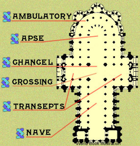

By custom, a cathedral is laid out in the shape of the cross upon which Jesus was crucified. The main entrance, which lies at the bottom of the cross, faces west.
The main parts of the cathedral are:
